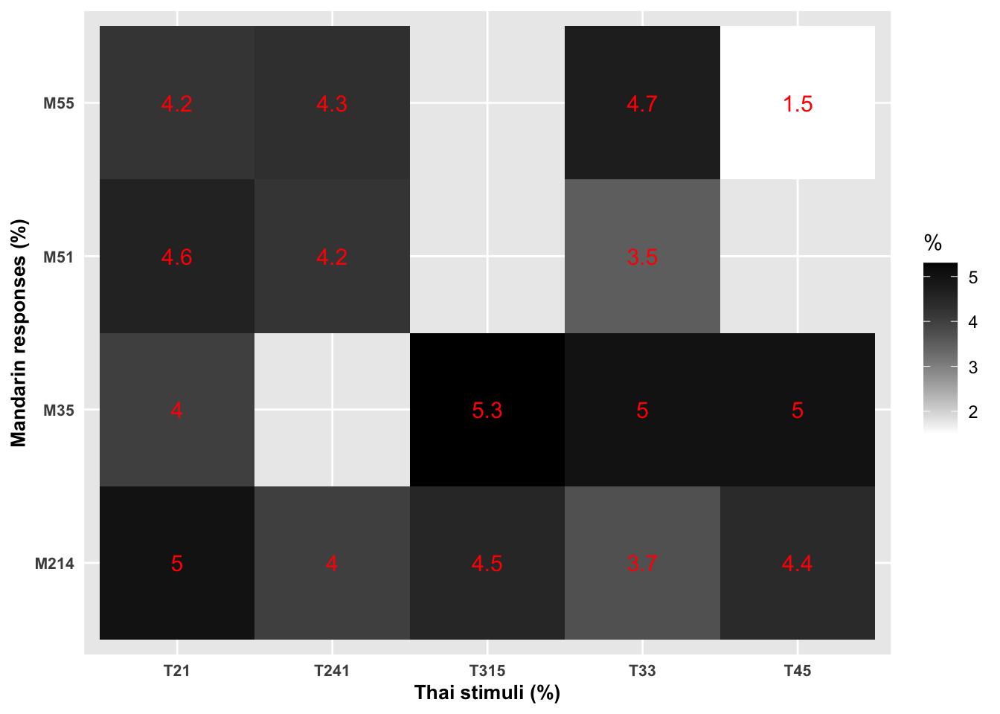

Chapter 5 第五章 语言实验数据分析
实验是心理语言学常用的研究方法。对于实验数据的基本分析，包括数据导入，数据整理，数据转换，数据可视化和数据建模。本章以语音感知领域的一个实验为例，介绍在R语言环境中行为实验中数据分析的过程。
研究背景 >成年人对言语语音的感知受到母语语音系统的影响。对于母语中没有，而外语中存在的音位对立，人们感知起来会存在困难。因此，对于母语和外语语音感知关系的研究对于外语学习和教学来说非常重要。常用的实验方法或者任务是跨语言感知实验。此类实验中，被试会听到外语语音，然后需要选择与之最相似的母语语音，并且为这种相似度评分。通过对于母语和外语映射关系的分析，结合相关理论，如感知同化模型，我们可以预测不同外语音位对立的感知难度。声调语言占全世界语言的70%，但是相关的跨语言感知研究却很有限，下面的分析基于Chen et al 2020中的部分数据，分析汉语母语者跨语言感知泰语声调的模式。
5.1 数据导入
为了方便数据读取和存储，建议设置工作路径。这里可以将工作路径设置在配套数据文件夹ch5中。实验是使用E-prime进行编程获取的感知数据，单个人的原始数据可以用E-prime进行合成导出成为txt纯文本格式。首先我们使用R的导入函数进行导入得到一个数据框。
## ExperimentName Subject Session
## 1 Assimilation_2b 101 1
## 2 Assimilation_2b 101 1
## 3 Assimilation_2b 101 1
## 4 Assimilation_2b 101 1
## 5 Assimilation_2b 101 1
## 6 Assimilation_2b 101 1
## Clock.Information
## 1 <?xml version=1.0?>\\n<Clock xmlns:dt=urn:schemas-microsoft-com:datatypes><Description dt:dt=string>E-Prime Primary Realtime Clock</Description><StartTime><Timestamp dt:dt=int>0</Timestamp><DateUtc dt:dt=string>2017-12-26T06:39:05Z</DateUtc></StartTime><FrequencyChanges><FrequencyChange><Frequency dt:dt=r8>2742343</Frequency><Timestamp dt:dt=r8>15765959310</Timestamp><Current dt:dt=r8>0</Current><DateUtc dt:dt=string>2017-12-26T06:39:05Z</DateUtc></FrequencyChange></FrequencyChanges></Clock>\\n
## 2 <?xml version=1.0?>\\n<Clock xmlns:dt=urn:schemas-microsoft-com:datatypes><Description dt:dt=string>E-Prime Primary Realtime Clock</Description><StartTime><Timestamp dt:dt=int>0</Timestamp><DateUtc dt:dt=string>2017-12-26T06:39:05Z</DateUtc></StartTime><FrequencyChanges><FrequencyChange><Frequency dt:dt=r8>2742343</Frequency><Timestamp dt:dt=r8>15765959310</Timestamp><Current dt:dt=r8>0</Current><DateUtc dt:dt=string>2017-12-26T06:39:05Z</DateUtc></FrequencyChange></FrequencyChanges></Clock>\\n
## 3 <?xml version=1.0?>\\n<Clock xmlns:dt=urn:schemas-microsoft-com:datatypes><Description dt:dt=string>E-Prime Primary Realtime Clock</Description><StartTime><Timestamp dt:dt=int>0</Timestamp><DateUtc dt:dt=string>2017-12-26T06:39:05Z</DateUtc></StartTime><FrequencyChanges><FrequencyChange><Frequency dt:dt=r8>2742343</Frequency><Timestamp dt:dt=r8>15765959310</Timestamp><Current dt:dt=r8>0</Current><DateUtc dt:dt=string>2017-12-26T06:39:05Z</DateUtc></FrequencyChange></FrequencyChanges></Clock>\\n
## 4 <?xml version=1.0?>\\n<Clock xmlns:dt=urn:schemas-microsoft-com:datatypes><Description dt:dt=string>E-Prime Primary Realtime Clock</Description><StartTime><Timestamp dt:dt=int>0</Timestamp><DateUtc dt:dt=string>2017-12-26T06:39:05Z</DateUtc></StartTime><FrequencyChanges><FrequencyChange><Frequency dt:dt=r8>2742343</Frequency><Timestamp dt:dt=r8>15765959310</Timestamp><Current dt:dt=r8>0</Current><DateUtc dt:dt=string>2017-12-26T06:39:05Z</DateUtc></FrequencyChange></FrequencyChanges></Clock>\\n
## 5 <?xml version=1.0?>\\n<Clock xmlns:dt=urn:schemas-microsoft-com:datatypes><Description dt:dt=string>E-Prime Primary Realtime Clock</Description><StartTime><Timestamp dt:dt=int>0</Timestamp><DateUtc dt:dt=string>2017-12-26T06:39:05Z</DateUtc></StartTime><FrequencyChanges><FrequencyChange><Frequency dt:dt=r8>2742343</Frequency><Timestamp dt:dt=r8>15765959310</Timestamp><Current dt:dt=r8>0</Current><DateUtc dt:dt=string>2017-12-26T06:39:05Z</DateUtc></FrequencyChange></FrequencyChanges></Clock>\\n
## 6 <?xml version=1.0?>\\n<Clock xmlns:dt=urn:schemas-microsoft-com:datatypes><Description dt:dt=string>E-Prime Primary Realtime Clock</Description><StartTime><Timestamp dt:dt=int>0</Timestamp><DateUtc dt:dt=string>2017-12-26T06:39:05Z</DateUtc></StartTime><FrequencyChanges><FrequencyChange><Frequency dt:dt=r8>2742343</Frequency><Timestamp dt:dt=r8>15765959310</Timestamp><Current dt:dt=r8>0</Current><DateUtc dt:dt=string>2017-12-26T06:39:05Z</DateUtc></FrequencyChange></FrequencyChanges></Clock>\\n
## DataFile.Basename Display.RefreshRate ExperimentVersion Group RandomSeed RuntimeCapabilities RuntimeVersion
## 1 Assimilation_2b-101-1 60.015 1.0.0.62 1 -1413574928 Professional 2.0.10.353
## 2 Assimilation_2b-101-1 60.015 1.0.0.62 1 -1413574928 Professional 2.0.10.353
## 3 Assimilation_2b-101-1 60.015 1.0.0.62 1 -1413574928 Professional 2.0.10.353
## 4 Assimilation_2b-101-1 60.015 1.0.0.62 1 -1413574928 Professional 2.0.10.353
## 5 Assimilation_2b-101-1 60.015 1.0.0.62 1 -1413574928 Professional 2.0.10.353
## 6 Assimilation_2b-101-1 60.015 1.0.0.62 1 -1413574928 Professional 2.0.10.353
## RuntimeVersionExpected SessionDate SessionStartDateTimeUtc SessionTime StudioVersion Block explist explist.Cycle
## 1 2.0.10.353 12-26-2017 26-Dec-17 6:39:05 AM 17:39:05 2.0.10.248 1 NA NA
## 2 2.0.10.353 12-26-2017 26-Dec-17 6:39:05 AM 17:39:05 2.0.10.248 2 NA NA
## 3 2.0.10.353 12-26-2017 26-Dec-17 6:39:05 AM 17:39:05 2.0.10.248 3 NA NA
## 4 2.0.10.353 12-26-2017 26-Dec-17 6:39:05 AM 17:39:05 2.0.10.248 4 NA NA
## 5 2.0.10.353 12-26-2017 26-Dec-17 6:39:05 AM 17:39:05 2.0.10.248 5 NA NA
## 6 2.0.10.353 12-26-2017 26-Dec-17 6:39:05 AM 17:39:05 2.0.10.248 6 NA NA
## explist.Sample filename.Block. praclist praclist.Cycle praclist.Sample pracSlide1.ACC pracSlide1.CRESP
## 1 NA Thai_F4_maa241-5 2 1 1 0 NA
## 2 NA Thai_F4_maa45-4 15 1 2 0 NA
## 3 NA Thai_F4_maa45-3 5 1 3 0 NA
## 4 NA Thai_F4_mii33-5 9 1 4 0 NA
## 5 NA Thai_F4_mii315-6 18 1 5 0 NA
## 6 NA Thai_F4_mii45-3 20 1 6 0 NA
## pracSlide1.DurationError pracSlide1.OnsetDelay pracSlide1.OnsetTime pracSlide1.OnsetToOnsetTime pracSlide1.RESP
## 1 0 -1 146763 0 2
## 2 0 0 155761 0 5
## 3 0 -1 164758 0 6
## 4 0 -1 173756 0 7
## 5 0 -1 182754 0 7
## 6 0 0 191752 0 7
## pracSlide1.RT pracSlide1.RTTime pracSoundOut1.ACC pracSoundOut1.CRESP pracSoundOut1.DurationError
## 1 2590 149353 1 NA 369
## 2 1992 157753 0 NA 0
## 3 2584 167342 0 NA 0
## 4 2443 176199 0 NA 0
## 5 2329 185083 0 NA 0
## 6 2480 194232 0 NA 0
## pracSoundOut1.OnsetDelay pracSoundOut1.OnsetTime pracSoundOut1.RESP pracSoundOut1.RT pracSoundOut1.RTTime
## 1 -1 142763 0 0
## 2 -1 151761 h 2823 154584
## 3 -1 160759 g 3714 164473
## 4 -1 169756 f 2269 172025
## 5 -1 178754 h 1286 180040
## 6 -1 187752 g 1549 189301
## Procedure.Block. Running.Block. speaker.Block. syllable.Block. token.Block. tone.Block. Trial f1List1 f1List1.Cycle
## 1 pracproc praclist F4 maa 5 241 NA NA NA
## 2 pracproc praclist F4 maa 4 45 NA NA NA
## 3 pracproc praclist F4 maa 3 45 NA NA NA
## 4 pracproc praclist F4 mii 5 33 NA NA NA
## 5 pracproc praclist F4 mii 6 315 NA NA NA
## 6 pracproc praclist F4 mii 3 45 NA NA NA
## f1List1.Sample f1List2 f1List2.Cycle f1List2.Sample f2List1 f2List1.Cycle f2List1.Sample f2List2 f2List2.Cycle
## 1 NA NA NA NA NA NA NA NA NA
## 2 NA NA NA NA NA NA NA NA NA
## 3 NA NA NA NA NA NA NA NA NA
## 4 NA NA NA NA NA NA NA NA NA
## 5 NA NA NA NA NA NA NA NA NA
## 6 NA NA NA NA NA NA NA NA NA
## f2List2.Sample filename.Trial. Procedure.Trial. Running.Trial. Slide1.ACC Slide1.CRESP Slide1.DurationError
## 1 NA NA NA NA
## 2 NA NA NA NA
## 3 NA NA NA NA
## 4 NA NA NA NA
## 5 NA NA NA NA
## 6 NA NA NA NA
## Slide1.OnsetDelay Slide1.OnsetTime Slide1.OnsetToOnsetTime Slide1.RESP Slide1.RT Slide1.RTTime SoundOut1.ACC
## 1 NA NA NA NA NA NA NA
## 2 NA NA NA NA NA NA NA
## 3 NA NA NA NA NA NA NA
## 4 NA NA NA NA NA NA NA
## 5 NA NA NA NA NA NA NA
## 6 NA NA NA NA NA NA NA
## SoundOut1.CRESP SoundOut1.DurationError SoundOut1.OnsetDelay SoundOut1.OnsetTime SoundOut1.RESP SoundOut1.RT
## 1 NA NA NA NA NA
## 2 NA NA NA NA NA
## 3 NA NA NA NA NA
## 4 NA NA NA NA NA
## 5 NA NA NA NA NA
## 6 NA NA NA NA NA
## SoundOut1.RTTime speaker.Trial. syllable.Trial. token.Trial. tone.Trial.
## 1 NA NA NA
## 2 NA NA NA
## 3 NA NA NA
## 4 NA NA NA
## 5 NA NA NA
## 6 NA NA NA# library(readr)
# assimilation <- read_csv("~/Nutstore Files/310_Tutorial/Language data science/data/ch5/assimilation.csv")
#
# head(assimilation)此时我们得到一个1820行，84列的数据框，里面包含了13名汉语普通话母语者感知不同泰语声调，并将其同化为普通话四个声调的数据。
5.2 数据整理
在正式实验之前，我们让被试进行了几个试次的练习。因此，首先我们需要去掉被试在练习时的数据。原始数据中每列的名称受到E-prime编程和运行的影响，有很多列是没有用的。为了方便后续数据处理，我们选择需要的列（即刺激和对于的选择和反应时数据），并去除被试没有作答的试次。
assim.clean = cm13%>%
# 除去练习数据
filter(., Procedure.Block. != "pracproc") %>%
# 选择需要的列并将变量名修改
select(., subject = "Subject",
stimuli = "tone.Trial.",
response = "SoundOut1.RESP",
response_rt = "SoundOut1.RT",
rating = "Slide1.RESP",
rating_rt = "Slide1.RT")%>%
# 除去被试未作答的试次
filter(., response !="")%>%
# 反应时为刺激播放后1000毫秒后的被试反应，原始数据从刺激播放开始记录，因此进行调整。
mutate(., response_rt = response_rt-1000)%>%
# 将被试的按键反应改写成相应的母语声调类别，修改刺激名称
mutate(response =dplyr:: recode(response,
f = "M55", g = "M35",
h = "M214", j = "M51"),
stimuli = dplyr:: recode(stimuli,
"33" = "T33", "21" = "T21",
"45" = "T45", "315" = "T315",
"241" = "T241"))
# mutate(n = 1)%>%
# group_by(language, subject, stimuli, response)%>%
# summarise(cat = sum(n),
# response_rt = mean(response_rt, na.rm = TRUE),
# rating = mean(rating, na.rm = TRUE),
# #rating_rt = mean(rating_rt,na.rm = TRUE)
# )%>%
# group_by(subject, stimuli)%>%
# mutate(percent = cat/sum(cat))%>%
# ungroup()%>%
# mutate()
# tbl.cat = cat.final%>%
# mutate(stimuli = as_factor(stimuli),
# response = as_factor(response),
# stimuli = fct_relevel(stimuli, "T45","T33","T21","T315","T241"),
# response = fct_relevel(response,
# "M55","M35","M214","M51",
# "NV44","NV22","NV35","NV21","NV415","NV214",
# "SV44","SV22","SV35","SV21","SV214"))%>%
# group_by(stimuli,response)%>%
# summarise(cat.mean = round(sum(percent)/13, 3)*100,
# rate.mean = round(mean(rating,na.rm = TRUE),1))%>%
# gather(temp, score, ends_with(".mean")) %>%
# unite(temp1, stimuli, temp, sep = "_")%>%
# spread(temp1, score)%>%
# #change the order of columns
# select("response" , "T45_cat.mean", "T45_rate.mean",
# "T33_cat.mean" , "T33_rate.mean",
# "T21_cat.mean","T21_rate.mean",
# "T315_cat.mean", "T315_rate.mean",
# "T241_cat.mean", "T241_rate.mean")5.3 数据转化
下面我们希望能够先计算每个人在听到泰语五个声调时的选择模式和反应时。然后基于此计算出汉语普通话组的选择模式和反应时。
assim.individual = assim.clean %>%
#为每个反应计数
mutate(n = 1)%>%
# 计算每个人每个泰语声调及对应汉语声调反应的次数、评分和反应时均值
group_by(subject, stimuli, response)%>%
summarise(cat = sum(n),
response_rt = mean(response_rt, na.rm = TRUE),
rating = mean(rating, na.rm = TRUE))%>%
# 计算每个人每个泰语声调及对应汉语声调反应的比例
group_by(subject, stimuli)%>%
mutate(percent = cat/sum(cat))%>%
ungroup()## `summarise()` has grouped output by 'subject', 'stimuli'. You can override using the `.groups` argument.assim.group = assim.individual%>%
# mutate(stimuli = as_factor(stimuli),
# response = as_factor(response),
# stimuli = fct_relevel(stimuli, "T45","T33","T21","T315","T241"),
# response = fct_relevel(response,
# "M55","M35","M214","M51"))%>%
group_by(stimuli,response)%>%
# 计算每组反应平均值和评分均值
summarise(cat.mean = round(sum(percent)/13, 3)*100,
rate.mean = round(mean(rating,na.rm = TRUE),1))%>%
gather(temp, score, ends_with(".mean")) %>%
# 将刺激和对应的反应均值和评分均值组合
unite(temp1, stimuli, temp, sep = "_")%>%
# 将表格进行转换，得到最终需要的感知同化模式图
spread(temp1, score)%>%
#change the order of columns
select("response" , "T45_cat.mean", "T45_rate.mean",
"T33_cat.mean" , "T33_rate.mean",
"T21_cat.mean","T21_rate.mean",
"T315_cat.mean", "T315_rate.mean",
"T241_cat.mean", "T241_rate.mean")## `summarise()` has grouped output by 'stimuli'. You can override using the `.groups` argument.5.4 可视化
上述表格包含两个分类变量（泰语刺激的声调类型以及汉语反应的声调类型）和两个连续变量（选择的百分比以及评分）。两个分类变量是自变量，两个连续变量是因变量，我们可以根据因变量不同分别作图。首先，我们可以为感知同化模式画一个堆叠柱状图。普通柱状图的横纵表表示一个分类变量，为了让柱状图可以表示两个分类变量，我们需要在每个柱子中加入不同的颜色来区分。
assim.individual %>%
group_by(stimuli,response)%>%
summarise(percent = round(sum(percent)/13, 3)*100)%>%
filter(percent>1)%>%
ggplot(aes(fill=response, y=percent, x=stimuli)) +
geom_bar( stat="identity")+
scale_fill_manual(
values=c("M55" = "black", "M35"="gray50",
"M214"="gray75", "M51"="white"),
name="Mandarin",
breaks=c("M55", "M35", "M214","M51"),
labels=c("M55", "M35", "M214","M51"))+
geom_bar(colour="black", stat="identity")+
xlab("Thai tones (stimuli)")+
ylab("Percentage of choice (%)") +
scale_y_continuous(expand = c(0, 0), limits = c(0, 101))+
labs(title = "Perceputal assimialtion of Thai tones by Mandarin listeners")+
theme_classic()+
theme(legend.title = element_text(size=12, face="bold"))+
theme(legend.text = element_text(size = 12, face = "bold"))+
theme(axis.text.x = element_text(face="bold", size=10))## `summarise()` has grouped output by 'stimuli'. You can override using the `.groups` argument.两个分类变量的另一种可视化方法是热力图。我们可以用泰语的刺激作为横轴，普通话声调类别作为纵轴，用色块的深浅表示评分的高低。
assim.individual %>%
group_by(stimuli,response)%>%
summarise(percent = round(sum(percent)/13, 3)*100,
# 计算评分的均值
rate.mean = round(mean(rating,na.rm = TRUE),1))%>%
mutate(text.color = (stimuli== response))%>%
# 构建xy轴
ggplot(aes(stimuli,response))+
# 构建热力图
geom_tile(aes(fill = rate.mean))+
# 将评分作为标记填入，并设置相应的颜色、大小
geom_text(aes(label = round(rate.mean, 1)),
color = "red",
size = 4) +
scale_colour_manual(values=c("black", "white"))+
scale_x_discrete(name = "Thai stimuli (%)")+
scale_y_discrete(name = "Mandarin responses (%)")+
scale_fill_gradient(name="%",low = "white", high = "black") +
theme(axis.text.x = element_text(face="bold", size=8),
axis.title.x = element_text(face="bold", size=10),
axis.title.y = element_text(face="bold", size=10),
#axis.title.y = element_blank(),
axis.text.y = element_text(face="bold", size=8),
#axis.text.y = element_blank(),
axis.ticks.y = element_blank(),
axis.ticks.x = element_blank())## `summarise()` has grouped output by 'stimuli'. You can override using the `.groups` argument.